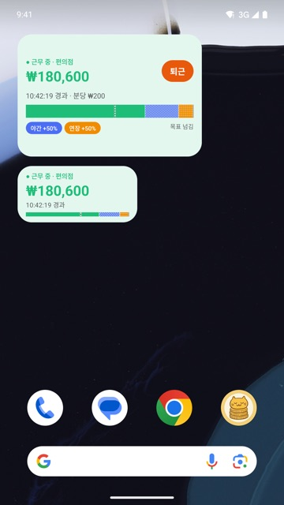
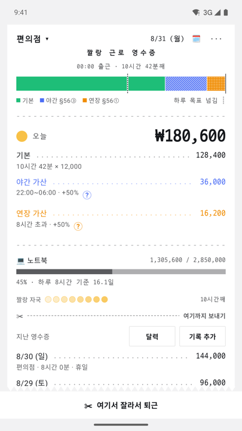
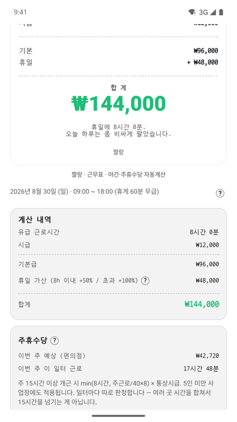

출근 · 퇴근 · 정산
버튼 하나 누르면,
오늘 번 돈이 계산됩니다.
짤랑은 시급제 알바와 교대근무자를 위한 근무 기록 앱입니다. 야간·연장·휴일·주휴수당을 근로기준법 기준으로 대신 계산하고, 퇴근하면 근로명세서 한 장으로 보여줍니다.
회원가입이 없습니다 · 기록은 기기에만 저장됩니다 · 표시 금액은 세전 기준입니다
09:00 출근 · 10시간 42분째
- 기본
- 128,400
- 야간 가산 §56③
- 36,000
- 연장 가산 §56①
- 16,200
세 걸음이면 끝
누르고, 잊고, 받아 보세요.
근무 중에 앱을 들여다볼 필요가 없습니다. 출근을 누른 뒤에는 홈 화면 위젯이 대신 셉니다.
-
출근을 누르고
일터를 한 번 만들어 두면 그다음부터는 버튼 하나입니다. 컨트롤 센터와 잠금화면에서도 누를 수 있습니다.
-
위젯이 세는 동안
홈 화면 위젯에 오늘 번 돈이 실시간으로 쌓입니다. 앱을 열지 않아도 됩니다.
-
퇴근하면 명세서
기본·야간·연장·휴일이 항목별로 갈린 근로명세서가 나옵니다. 그대로 이미지로 보낼 수 있습니다.
계산의 근거
감으로 세지 않습니다. 조문으로 셉니다.
가산수당은 근로기준법이 정한 비율로 붙습니다. 짤랑은 그 조문을 그대로 적용하고, 명세서의 각 줄에서 어떤 조항이 쓰였는지 보여줍니다.
- 야간근로+50%22시~06시 · 제56조 제3항
- 연장근로+50%1일 8시간 초과 · 제56조 제1항
- 휴일근로+50%8시간 이내 · 제56조 제2항
- 주휴수당+1일주 15시간 이상 · 제55조
- 5인 미만 사업장이면 설정에서 한 번만 골라 두세요. 가산수당이 적용되지 않는 사업장을 5인 이상으로 계산하면 받을 수 없는 금액이 보입니다.
- 주휴수당은 조건을 채울 때만 붙습니다. 주 15시간을 넘기는 주에만 계산에 들어갑니다.
- 표시 금액은 세전입니다. 세후로 보고 싶으면 명세서에서 공제 항목을 함께 볼 수 있습니다.
실제 화면
종이 한 장으로 읽히는 하루.



기록이 있는 곳
가입이 없고,
기록은 기기에 남습니다.
짤랑은 회원가입과 로그인이 없습니다. 일터 정보와 출퇴근 기록, 시급은 기기 안에만 저장되며 회사 서버로 보내지 않습니다. 회사는 서버를 운영하지 않으므로 그 내용을 열람할 수 없습니다.
기기를 바꿀 때는 설정에서 기록을 파일로 내보내고 새 기기에서 가져올 수 있습니다. 광고와 결제에서 외부 서비스가 처리하는 정보는 개인정보처리방침에 적어 두었습니다.
광고와 결제
광고가 일을 방해하지 않게.
- 앱을 연 직후에 뜨는 광고는 쓰지 않습니다. 근무 기록은 급히 확인하는 도구라서 진입 광고와 상극입니다.
- 전면 광고는 퇴근 정산을 마친 뒤에만, 한 번만. 출근·퇴근 버튼 자체를 가로막지 않습니다.
- 설치 후 3일 동안은 광고를 보여주지 않습니다.
- 리워드 광고는 직접 누를 때만 재생됩니다. 보상은 앱 안의 코인뿐이고, 코인은 팔지 않습니다.
- 광고 제거는 구독이 아니라 1회성 결제입니다. 종이 테마도 함께 열립니다.
도움이 필요할 때
문의와 정책 안내
계산 결과가 이상하거나 기능에 문제가 있으면 이메일로 알려 주세요. 어떤 일터 설정에서 무엇이 어긋났는지 적어 주시면 더 빨리 고칠 수 있습니다.